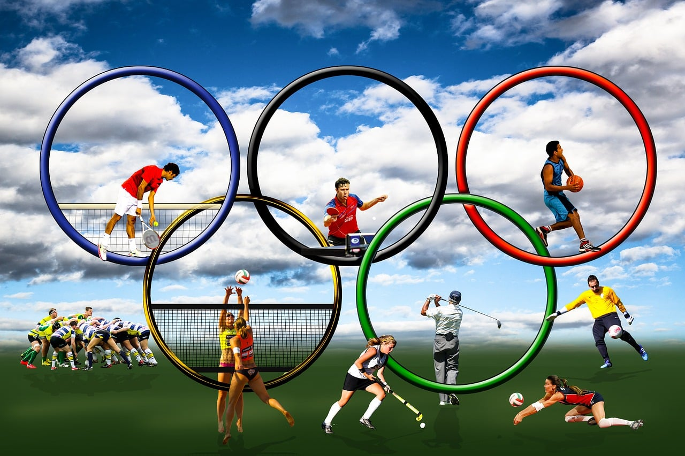

A nyári olimpiai játékok a világ legnagyobb nemzetközi multisport-eseménye, amelyet négyévente rendeznek meg a Nemzetközi Olimpiai Bizottság szervezésében. A több mint kétszáz ország sportolóját felvonultató verseny célja a sportágak legjobbjainak összemérése, valamint a nemzetek közötti béke és barátság erősítése az olimpiai eszme jegyében.

Az első újkori nyári olimpiát 1896-ban Athénban rendezték meg, ahol a győztesek még nem arany-, hanem ezüstérmet és olajágat kaptak, sőt 1900-ban még az élőgalamb-lövészet is szerepelt a programban. A játékok történetében Magyarország a világ egyik legsikeresebb nemzete, hiszen lakosságarányosan kiemelkedően sok érmet szereztünk, a legeredményesebb sportágunk pedig a vívás.
Tudj meg többet!Az Olimpiai Játékok a világ legnagyobb multisport eseménye, amely négyévente gyűjti össze a világ legkiválóbb sportolóit, hogy a békés együttműködés és a nemes versengés szellemében mérjék össze tudásukat.
| Rendező város | Ország | Év |
|---|---|---|
| Párizs | Francia ország | 2024 |
| Tokio | Japán | 2020 (2021) |
| Rio de Janeiro | Brazília | 2016 |